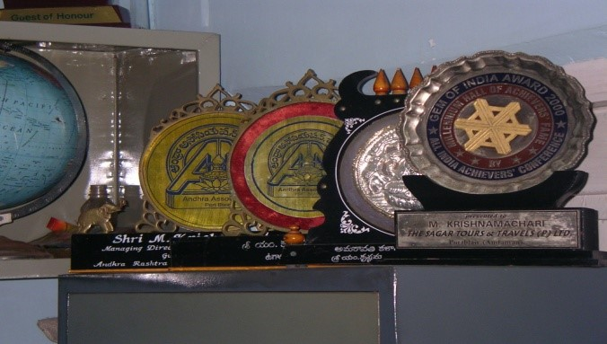

28 YEARS OF SERVICES TO TOURISTS …..
Before we answer to your query we would like to brief about us in a few lines.......
Andaman Tours - These Package Tours are offered to you by The Sagar Tour & Travels (Pvt) Ltd., a Tour Operator in Andamans having recognition by The Department of Tourism, Government of India, New Delhi since 1993 (Certification under renewal). The Registered Office of this organization is at Port Blair, the capital town of Andaman, with authorized selling agents at all over important cities in the country.
Established 28 years back in the year 1987 at Port Blair, Sagar Tours & Travels Private Limited is an organization with a tract record of zero complaints, friendly dealings and out standing services by well trained professionals. Tourism industry in the islands was hit due to pilots strikes, earth quakes, cyclones, tsunami, global recession and what not in the past 20-25 years, yet our organization has remained unshaken, strong and steady.
Sagar Tours & Travels Private Ltd, Port Blair is a winner of more than 13 National, International Awards for promoting eco-friendly and environmentally sustainable tourism in the islands – Andaman & Nicobar which include ‘the Tourism Pioneer award’ in 2014 presented by Southern region of the Travel Agents Association of India, Chennai
Sagar Tours is also a franchisee of the Trade Wings Institute of Management, HO Mumbai to manage an IATA/UFTAA Foundation Course Training Center (ATC) and also a VTP (Vocational Training Provider ) Registered with Ministry of Labor & Training & Employment, New Delhi to impart training to local youth in Aviation, Travel, Tourism, hospitality and other related sectors under Skills Development Initiative scheme ( Modular Employable Skills).
We have no branch offices or franchise offices in any part of the country or world, except the Registered Office at Port Blair, the address of which is hereunder.
Click here to know more.....